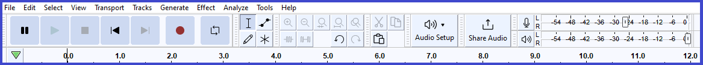
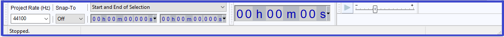
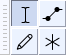
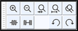
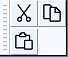
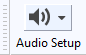
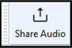
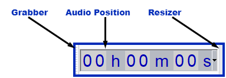

Toolbars Overview
From Audacity Development Manual
Toolbars provide quick access to many functions in Audacity. In some cases the functions provided by a toolbar are available only through that toolbar. Other than the Spectral Selection Toolbar and the Scrub Toolbar, all toolbars are enabled by default. If your desired toolbar is not visible, choose and click to put a checkmark by the toolbar you wish to enable.
- The tooltips for the toolbars and tools (visible when hovering over the toobar or tool) will display the shortcut for that tool/toolbar if one is set.
The size and position of toolbars can be customized. See Customizing Toolbar Layout for details.
|
Toolbars - upper and lower dock areas
There are two dock areas for toolbars in Audacity. By default, most of the Audacity toolbars are in the upper dock, with only the Selection Toolbar in the lower dock.
Toolbars can be arranged and resized within either of the two docks, or floated free of the docks.
Upper Toolbar dock area
- 
Lower Toolbar dock area
- 
The Toolbars
The individual toolbars are described briefly below. Click on any toolbar title to go the details page for that toolbar, or on the image to go to details for that button.
Transport Toolbar

- Controls playback and recording and skips to start or end of project when neither playing or recording.
Tools Toolbar
- 
- Chooses various tools for selection, repair and volume adjustment.
- Click on any tool for details of what that tool does.
- For more details see Tools Toolbar.
Edit Toolbar
- 
- The top row has a set of zoom tools: zoom in, zoom out, zoom to selection, zoom to fit project and zoom toggle
- The bottom row has: trim, silence, undo and redo
- For more details see Edit Toolbar
Cut/Copy/Paste Toolbar
- 
- A toolbar for the functions> Cut, Copy and Paste.
Audio Setup Toolbar
- 
- Gives a menu that enables you to manage the setup of your audio input and output devices and adjust the latency of your computer.
- 
- Enables you to share your audio on-line with others.
Recording Meter Toolbar

- Displays recording levels and toggles input monitoring when not recording.
Playback Meter Toolbar

- Displays playback levels.
Scrub Toolbar

- Starts, stops or switches to Scrub play or Seek play, and hides or displays the Scrub Ruler.
- This toolbar is not shown by default. Select to show the toolbar, which by default docks in the upper dock.
Device Toolbar

- Selects audio host, recording device, number of recording channels and playback device.
| The Device Toolbar is no longer displayed by default in Audacity. To enable it, click on and check on Device Toolbar. |
Selection Toolbar

- Controls the sample rate of the project, snapping to the selection format
and adjusts cursor and region position by keyboard input.
The default position of Selection Toolbar is at the bottom of the main Audacity window, thus it is not visible in the Toolbars image at the top of this page.
- Controls the sample rate of the project, snapping to the selection format
Time Toolbar
- 
- A read-only toolbar which displays the current audio position. When Audacity is not Playing or Recording this will be either the current cursor position or the beginning of the current selection if present. When Playing or recording it dynamically shows the current Play head or Record head position
Play-at-Speed Toolbar

- Plays audio at a slower or faster speed than normal, affecting pitch.
Spectral Selection Toolbar


- Displays and lets you adjust the current spectral (frequency) selection without having to be in Spectrogram view.
- This toolbar is not shown by default. Select to show the toolbar, which by default docks in the lower dock, beside or under Selection Toolbar.
- Choose your preferred format option from the dropdown menu above the boxes: Center frequency and Width
 or Low and High Frequencies .
or Low and High Frequencies .
In Center frequency and Width view, to clear the spectral selection entirely just use the Delete key after having clicked on any of the digits (note carefully that this is not the Delete key on the numerical keypad). When in Low and High Frequencies view you can clear either input box individually with the Delete key.